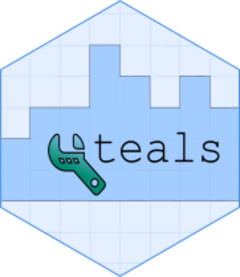

Toggling Input Visibility with `input_visibility_transformator`
Source:vignettes/input-visibility-transformator.Rmd
input-visibility-transformator.Rmdinput_visibility_transformator is a
teal_transform_module that automatically discovers the
Shiny inputs rendered in a module’s encoding panel and adds a
collapsible Toggle Input Visibility control. Users can
show or hide individual inputs without any changes to the underlying
module code.
When to use it
- A module exposes many inputs but only a subset are relevant for a given study.
- You want to reduce visual clutter by hiding advanced or rarely-used controls (e.g. grade filters, confidence interval settings) by default while keeping them accessible.
Key arguments
| Argument | Type | Description |
|---|---|---|
label |
character(1) |
Label shown in the transformator accordion (default:
"Toggle Input Visibility"). |
hidden_by_default |
character |
Vector of label substrings (case-insensitive). Any discovered input whose label contains one of these strings is hidden on first render. |
Example application
The app below registers input_visibility_transformator
on three teal.modules.clinical modules, each with a
different set of inputs hidden by default.
data <- teal_data()
data <- within(data, {
library(dplyr)
ADSL <- tmc_ex_adsl
.lbls_adae <- col_labels(tmc_ex_adae)
ADAE <- tmc_ex_adae |> mutate_if(is.character, as.factor)
col_labels(ADAE) <- .lbls_adae
ADLB <- tmc_ex_adlb
})
join_keys(data) <- default_cdisc_join_keys[names(data)]
ADSL <- data[["ADSL"]]
ADAE <- data[["ADAE"]]
ADLB <- data[["ADLB"]]
app <- teal::init(
data = data,
modules = teal::modules(
# ── Adverse events by term: no inputs hidden, full toggle panel ────────
tm_t_events(
label = "Adverse Event Table",
dataname = "ADAE",
arm_var = choices_selected(c("ARM", "ARMCD"), "ARM"),
llt = choices_selected(
choices = variable_choices(ADAE, c("AETERM", "AEDECOD")),
selected = "AEDECOD"
),
hlt = choices_selected(
choices = variable_choices(ADAE, c("AEBODSYS", "AESOC")),
selected = "AEBODSYS"
),
add_total = TRUE,
event_type = "adverse event",
transformators = list(
input_visibility_transformator()
)
),
# ── Demographics summary: hide the "show arm variable" and "useNA" ─────
tm_t_summary(
label = "Demographics",
dataname = "ADSL",
arm_var = choices_selected(c("ARM", "ARMCD"), "ARM"),
add_total = TRUE,
summarize_vars = choices_selected(
choices = variable_choices(ADSL, c("SEX", "RACE", "BMRKR2", "EOSDY", "DCSREAS", "AGE")),
selected = c("SEX", "RACE", "AGE")
),
useNA = "ifany",
transformators = list(
input_visibility_transformator(
hidden_by_default = c("show arm", "missing data")
)
)
),
# ── Lab summary by visit: hide numeric stats and denominator ──────────
tm_t_summary_by(
label = "Lab Summary by Visit",
dataname = "ADLB",
arm_var = choices_selected(
choices = variable_choices(ADSL, c("ARM", "ARMCD")),
selected = "ARM"
),
add_total = TRUE,
by_vars = choices_selected(
choices = variable_choices(ADLB, c("PARAM", "AVISIT")),
selected = "AVISIT"
),
summarize_vars = choices_selected(
choices = variable_choices(ADLB, c("AVAL", "CHG")),
selected = "AVAL"
),
useNA = "ifany",
paramcd = choices_selected(
choices = value_choices(ADLB, "PARAMCD", "PARAM"),
selected = "ALT"
),
transformators = list(
input_visibility_transformator(
hidden_by_default = c("numeric", "denominator")
)
)
)
)
)
if (interactive()) shiny::shinyApp(app$ui, app$server)How it works
- After the module’s encoding panel renders, a JavaScript snippet
walks the sidebar and assigns a stable
data-vis-keyattribute to each input container. A key is derived from the element’s ID or its DOM path when it is first seen and is never reassigned, so keys stay stable across re-discovery passes even when siblings are hidden. - The discovered inputs are sent back to R via
Shiny.setInputValue. - R renders a checkbox list inside the accordion panel of the transformator with Show all / Hide all links.
- Toggling a checkbox sends a custom Shiny message that sets
element.style.displayon the corresponding DOM node — the input is hidden visually but remains fully functional in the background. - Inputs whose labels match any entry in
hidden_by_defaultstart hidden. Their boxes start unchecked; check a box (or use Show all) to reveal the input. - Accordion sections (e.g. “Additional table settings”) are treated as parent items. Toggling a parent cascades to all its children.
- A
MutationObserverwatches the sidebar for late-rendered elements (e.g. arm variable buckets) and triggers re-discovery automatically.
Notes
- The transformator passes data through unchanged — it has no effect on the analysis or the output table.
-
hidden_by_defaultmatching is case-insensitive and uses substring matching, so"grade"will match both"Grade filter"and"High grade". - Each module instance gets its own independent visibility state; hiding an input in one tab does not affect other tabs.